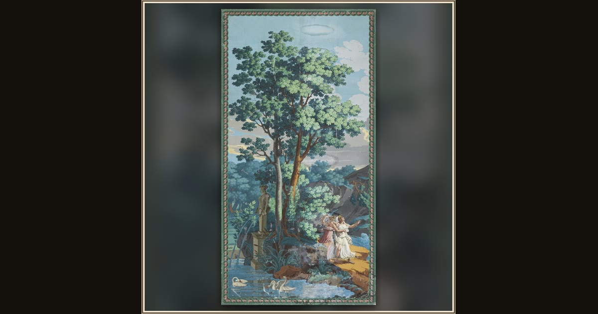

Telemachus on the Island of Calypso (scenic wallpaper)
Xavier Mader, for Joseph Dufour et Cie · 1815–20 · Cooper Hewitt, Smithsonian Design Museum · New York, USA
Whole walls once told this story: a printed wallpaper panorama of young Telemachus searching for his lost father on Calypso's island. Explore its place in Book I of the Odyssey.